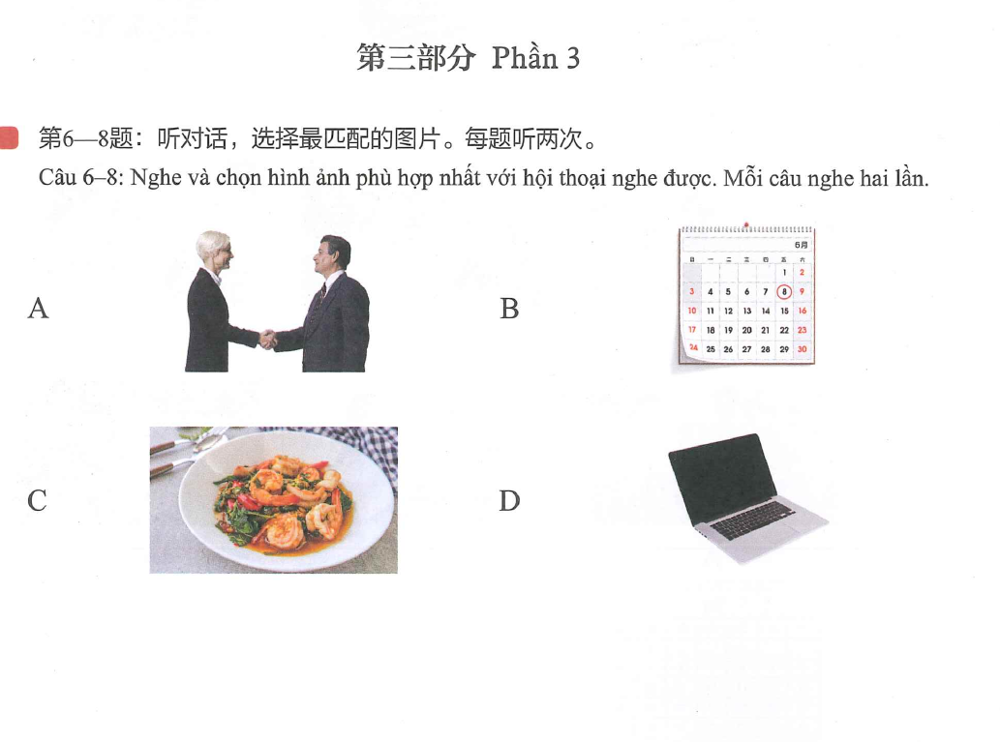
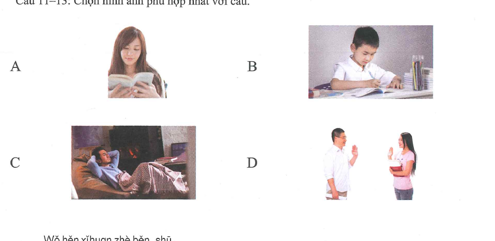

Hôm nay anh được nghỉ
一、Ngữ âm
1. Biến điệu của “不”
“不 (bù)” không đổi thanh khi đứng riêng hoặc đứng trước âm tiết mang thanh 1, thanh 2 và thanh 3. Khi đứng trước âm tiết mang thanh 4, “不” được đọc thành thanh 2.
🔊 Biến điệu của 不
bú shì · 不是
bú huì · 不会
bú dà · 不大
bú duì · 不对
2. Biến điệu của “一”
“一 (yī)” không đổi thanh khi đứng riêng hoặc biểu thị số thứ tự. Trước thanh 1, 2, 3, “一” đọc thành thanh 4; trước thanh 4, “一” đọc thành thanh 2.
🔊 一 trước thanh 1–2–3
yì xiē · 一些
yì nián · 一年
yì kǒu · 一口
🔊 一 trước thanh 4
yí ge · 一个
yí rì · 一日
yí suì · 一岁
二、Nghe, đọc và luyện tập
1. Nghe và chọn âm tiết nghe được
🔊 Chọn âm tiết
2. Chú ý biến điệu của “不”
Nghe ghi âm và nhắc lại, sau đó đọc to. Chú ý biến điệu của “不”.
🔊 Luyện đọc 不
| 不要 búyào | 不客气 bú kèqi | 不喝 bù hē | 不来 bù lái |
|---|---|---|---|
| 不冷 bù lěng | 不知道 bù zhīdào | 不学习 bù xuéxí | 不好听 bù hǎotīng |
3. Chú ý biến điệu của “一”
Nghe ghi âm và nhắc lại, sau đó đọc to. Chú ý biến điệu của “一”.
🔊 Luyện đọc 一
| 一天 yìtiān | 一元 yì yuán | 一点儿 yìdiǎnr | 一半 yíbàn |
|---|---|---|---|
| 一车 yì chē | 一人 yì rén | 一晚 yì wǎn | 一下 yíxià |
三、Luyện tập và kiểm tra mô phỏng · Phần nghe
Phần 1 · Câu 1–3: Nghe và chọn hình
例如：三 个 苹果 

 答案：C ✓
答案：C ✓
🔊 Câu 1–3
Phần 2 · Câu 4–5: Nghe câu hỏi, chọn câu trả lời
例如：
今天天气怎么样？
Jīntiān tiānqì zěnmeyàng?
A. 非常热
fēicháng rè
✓B. 很好听hěn hǎotīng
C. 在喝水zài hē shuǐ
🔊 Câu 4–5
Phần 3 · Câu 6–8: Nghe hội thoại, chọn hình phù hợp
例如：
女：你好！
男：你好！很高兴认识你。
男：你好！很高兴认识你。
Nǚ: Nǐ hǎo!
Nán: Nǐ hǎo! Hěn gāoxìng rènshi nǐ.
答案：A ✓Nán: Nǐ hǎo! Hěn gāoxìng rènshi nǐ.

🔊 Câu 6–8
Phần 4 · Câu 9–10: Nghe và chọn đáp án đúng
例如：
下午我去超市，我想买一些水果。
问：说话人下午去哪里？
问：说话人下午去哪里？
Xiàwǔ wǒ qù chāoshì, wǒ xiǎng mǎi yìxiē shuǐguǒ.
Wèn: Shuōhuàrén xiàwǔ qù nǎlǐ?
Wèn: Shuōhuàrén xiàwǔ qù nǎlǐ?
A. 超市
chāoshì
✓B. 医院yīyuàn
C. 学校xuéxiào
🔊 Câu 9–10
四、Phần đọc
Phần 1 · Câu 11–13: Chọn hình phù hợp

Phần 2 · Câu 14–16: Nối câu
A. 好的，谢谢！Hǎo de, xièxie!B. 我不会。Wǒ bú huì.C. 面条儿。Miàntiáor.D. 5月6号。Wǔ yuè liù hào.
例如：
你喝水吗？
Nǐ hē shuǐ ma?
A. 好的，谢谢！✓
Hǎo de, xièxie!
Phần 3 · Câu 17–18: Chọn từ điền vào chỗ trống
A. 几 jǐB. 好看 hǎokànC. 名字 míngzi
例如：
你叫什么（C）？
Nǐ jiào shénme (C)?
Phần 4 · Câu 19–20: Chọn đáp án đúng
例如：
请问现在几点了？
★说话人想知道什么？
★说话人想知道什么？
Qǐngwèn xiànzài jǐ diǎn le?
Shuōhuàrén xiǎng zhīdào shénme?
Shuōhuàrén xiǎng zhīdào shénme?
A. 时间
shíjiān
✓B. 名字míngzi
C. 房间号fángjiānhào